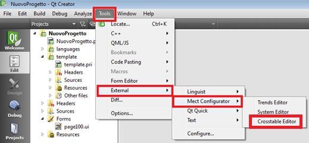
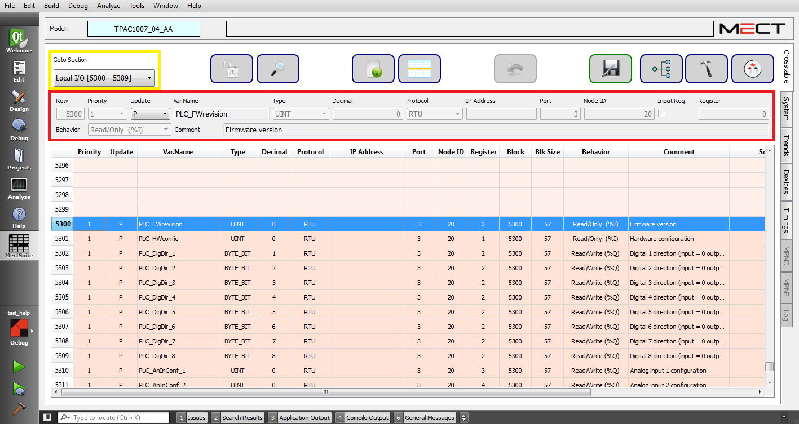

After project creation in Qt, first of all define variables used in the application. To do this use “Crosstable” that generates a global variables table that is shared between HMI and PLC.
To open “Crosstable” see the following figure:

Here the “Crosstable”:

In the “Goto Section” section (see yellow frame) it is possible to choose the variables type to see in the table below.
The red selection is where the user can setup to create and modify its project variables.
Moving mouse over each field a brief description appears.
To insert or modify a variable it is necessary:
Select table row;
Fill / modify existing fields in the red area;
Select “Enter” key or any row in the table to allow the insertion of the created or modified variable.
WARNING: inside table it is possible to move with the arrow keys as in a spreadsheet program.